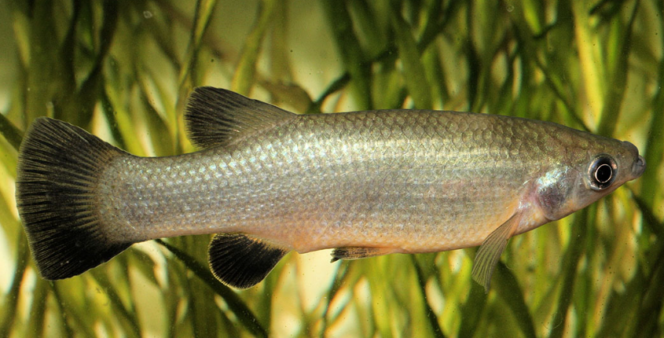

Systématique
- Ordre : Cyprinodontiformes
- Famille : Goodeidae
- Genre : Goodea
- Espèce : G. atripinnis
- Auteur : Jordan, 1880

Goodea atripinnis est une espèce robuste et adaptable, largement distribuée dans les plateaux centraux du Mexique. Elle est l'espèce type du genre Goodea. Contrairement à beaucoup d'autres goodeidés très localisés et menacés, elle occupe une vaste gamme d'habitats et présente une grande variabilité morphologique selon les populations.
C'est l'un des plus grands Goodeidae, les femelles pouvant atteindre 12 à 15 cm, tandis que les mâles restent généralement plus petits, entre 8 et 10 cm. Le corps est puissant, comprimé latéralement et assez haut. La coloration est typiquement gris-argenté à olive, avec des reflets métalliques. Comme son nom l'indique (*atripinnis* signifiant "nageoires noires"), les nageoires impaires, surtout chez les mâles, présentent souvent une pigmentation sombre marquée, pouvant aller jusqu'au noir profond.
Bien que l'espèce globale ne soit pas considérée comme en danger critique, certaines populations locales disparaissent en raison de la dégradation sévère de la qualité de l'eau dans le bassin du Rio Lerma. Sa robustesse en fait un excellent candidat pour débuter avec les goodeidés vivipares.
Goodea atripinnis est un poisson grégaire, actif et parfois dominateur en raison de sa taille et de sa vigueur. En aquarium, il occupe tout l'espace de nage mais reste souvent proche de la surface ou de la végétation pour brouter. Il est doté d'un tempérament curieux et n'est pas timide.
Compte tenu de sa taille adulte, il nécessite un espace conséquent. Les interactions sociales sont fréquentes, et les mâles passent beaucoup de temps à parader. Il peut cohabiter avec d'autres espèces robustes du Mexique, mais son appétit et sa vivacité peuvent intimider des poissons trop calmes ou trop petits.
Mode : Vivipare matrotrophe.
La reproduction est prolifique. Comme chez les autres Goodeinae, la fécondation est interne (andropodium) et les embryons sont nourris par des trophotaeniae. La gestation dure environ 55 à 60 jours.
Une femelle adulte de grande taille peut donner naissance à des portées impressionnantes, dépassant parfois 60 à 80 alevins. Les petits naissent très développés (15-20 mm) et sont capables de manger immédiatement des nourritures de taille standard. Les adultes ne sont généralement pas cannibales envers leurs propres petits si l'alimentation est suffisante, facilitant ainsi l'élevage en bac d'ensemble.
Dimorphisme sexuel : Le mâle est plus petit et possède un andropodium. Ses nageoires sont souvent plus sombres et plus développées que celles de la femelle. La femelle est nettement plus grande, plus massive et possède un profil ventral très rebondi lors de la gestation.
Espérance de vie : 5 à 8 ans en aquarium, ce qui est supérieur à la moyenne des petits cyprinodontiformes.
L'espèce fréquente une grande variété d'habitats : lacs (comme le lac Chapala et le lac Pátzcuaro), rivières, canaux et réservoirs artificiels. Elle tolère des eaux plus troubles et plus polluées que la plupart des autres goodeidés.
Le climat de sa zone de répartition (Mesa Central) est tempéré, avec des eaux dont la température varie de 15 °C en hiver à 26 °C en été. Elle apprécie les zones riches en algues et en débris organiques où elle trouve une grande partie de sa nourriture.
Répartition

Origine naturelle :
- Mexique : Très large distribution dans les États de Jalisco, Michoacán, Guanajuato, Querétaro et San Luis Potosí.
- Bassin du Rio Lerma, Rio Santiago et systèmes endoréiques associés.
- L'un des Goodeidae ayant la plus vaste aire de répartition.
C'est une espèce commune au Mexique, souvent trouvée dans les marchés locaux comme poisson de consommation dans certaines régions rurales (sous le nom de "charal").
Paramètres de maintenance
Température : 18 à 25 °C. Très tolérant, supporte des baisses à 15 °C sans problème.
pH : 7,0 à 8,5.
GH : 10 à 30 °dGH (eau dure à très dure).
Courant : Faible à modéré.
Volume conseillé : Minimum 150-200 L pour un groupe, en raison de la taille finale des femelles et de leur activité.
Régime alimentaire
Régime : Omnivore à forte tendance herbivore / détritivore.
En aquarium, il est peu exigeant. Il accepte tout type de nourriture sèche, mais une part importante de végétaux (spiruline, épinards poché, algues naturelles) est indispensable pour sa santé.
Il passe beaucoup de temps à "nettoyer" le décor et les plantes des algues et du périphyton. Un complément de nourriture carnée (congelé) est apprécié occasionnellement.